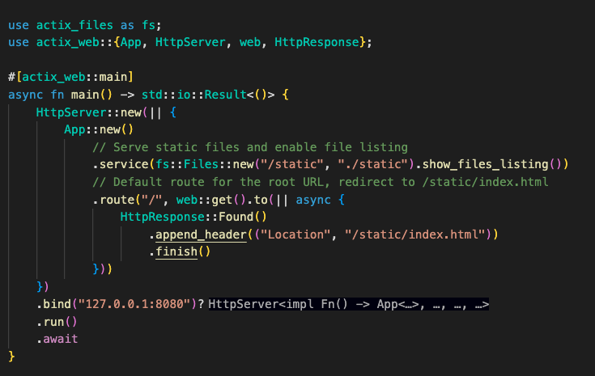
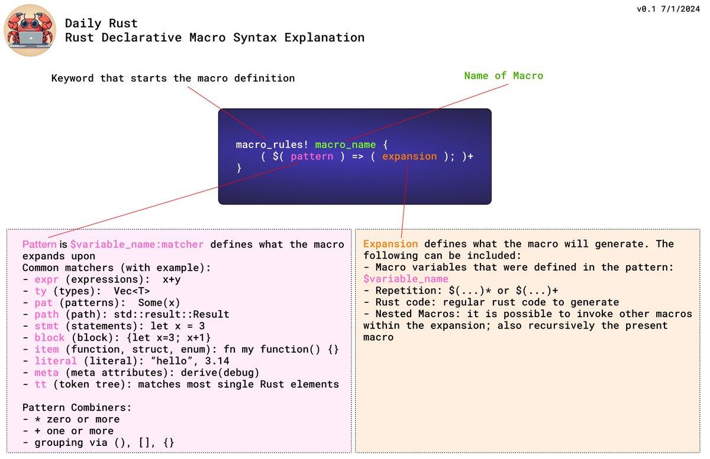
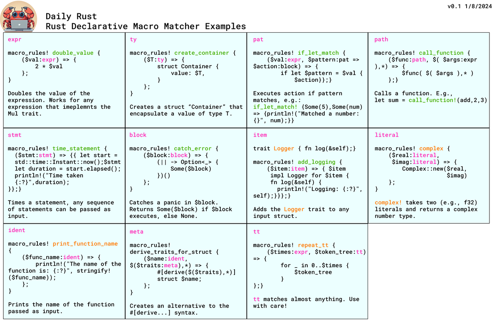
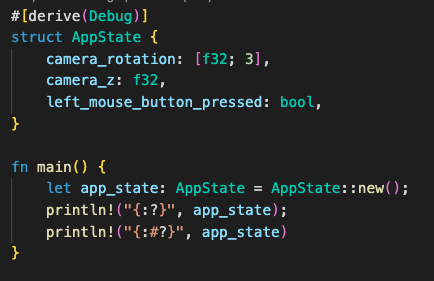
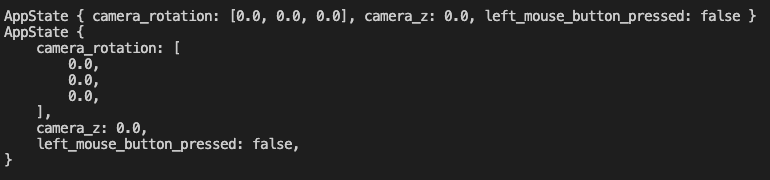

Tip #41
类似于 Go 语言中的通道（Go 的 channel），Rust 中的 std::sync::mpsc 提供了一种线程间安全地读写数据的机制:
|
|
在这个例子中，我们创建了一个通道，然后在一个线程中发送了一个字符串。在主线程中，我们等待接收这个字符串并打印它。
Tip #42
希望在编码过程中，让编译器和代码检查工具实时地指出并协助解决出现的问题吗？
不妨试试Bacon
Tip #43
除了标准库中的 std::HashMap，Rust 还为特定场景提供了其他哈希表变体：
IndexMap（indexmap库）：保持键的插入顺序。BTreeMap（位于std::collections）：按照键的排序顺序维护元素。DashMap（dashmap库）：无锁并发散列映射，适用于并发或多线程代码。
Tip #44
使用 actix_web 的 Rust 网页服务器，具备静态文件服务功能，并默认将请求路由到 index.html。几乎和 JavaScript 一样简单,对吗？

Tip #45
对于想要极度优化代码的你们，这里有一个有趣的小知识：
std::hint 允许你告诉编译器某个布尔表达式很可能是真的，从而启用优化的分支预测：
|
|
Tip #46
你是否曾被 PartialEq 和 Eq 这两个 #trait搞晕过？这里有一个快速概览：
PartialEq：通过eq方法实现（不要与Eq混淆！），它启用了相等性（==）检查。如果项目不可比较，则eq返回false。Eq：一个没有自己方法的“标记Trait”。它告诉编译器所有元素都可以进行等价比较，并确保等价关系是自反的、对称的和传递的。
Tip #47
一些避免使用可怕的clone()方法的策略包括：
- 向只读函数传递借用（
&）时使用引用 - 利用
Rc<T>或Arc<T>来共享所有权 - 实现
Copy特性（类似 C 语言中的 memcpy） - 使用
Cow<T>（写时复制）来半自动管理复制过程
Tip #48
Rust 在处理线程和读取它们的返回值方面真正大放异彩的一个例子是，这看起来比许多其他语言做起来要简单得多。下面是一个处理两个线程结果的简单示例：
|
|
Tip #49
使用 Rayon 库对 for 循环进行简单并行化，只需添加导入并使用 Rayon 提供的 .par_iter() 并行迭代器。
该代码用于统计大于0的元素。预期的加速效果大约为 X 倍，其中 X 代表你拥有的 CPU 核心数量：
|
|
Tip #50
如果你正在调试你的迭代器，并且只想测试数据的一个子集，你可以使用 myvec.iter().take(N) 来仅对前 N 个元素进行操作。
或者，你也可以对输入进行切片：&myvec[0..N].iter()
Tip #51
在迭代器中对一列可选值（Option）使用 map() 感到棘手？
filter_map() 巧妙地处理了这个问题，它会忽略 None 值，只处理 Some() 值：
|
|
Tip #52
Fn、FnMut 和 FnOnce 分别是什么？这些是用于将闭包作为函数参数传递的特殊trait。
Fn：不修改环境的闭包FnMut：可以修改环境FnOnce：运行一次并消耗环境
这里有一个展示 FnMut trait实际运用的例子：
|
|
Tip #53
继续探讨“核心”或“系统” trait的主题，Drop trait非常有趣：任何超出作用域的数据类型都会自动调用Drop()。因此，如果你实现了Drop()，就可以在需要时执行自定义的清理操作。
Tip #54
在使用异步 Rust 开发时，如果需要执行两个（不相关）任务，你可以使用来自 futures #库的 join! 宏并行地调度它们。相比于依次调用 .await，这样做可以更高效：
|
|
Tip #55
我深入探索了 Rust 中声明式宏的世界。第一步是要理解基本语法……这确实很难用文字描述，所以我制作了一张（希望是有教育意义的）图片，涵盖了基础知识：

Tip #56
在上一条的宏话题基础上，今天我探讨了10个匹配器加上上次帖子中遗漏的 "ident" 匹配器。来看看这张展示了每个匹配器的示例的网格图吧：

Tip #57
在 Rust 中，你可以实现在三个主要位置编写测试：
- 作为文档的一部分（doctest）
- 代码下方的嵌入式测试（#[cfg(test)]属性包裹）
- 外部的测试文件夹中
👉 通过执行 "cargo test" 来运行测试
Tip #58
Rust 的类型系统允许我们定义“标记类型”，这些可以仅仅是带有名字的结构体，用来为特定类型编码元数据。以下是一个使用标记结构体示例，表示一个文档结构体可以处于 "草稿" 或 "已发布" 状态：
|
|
Tip #59
我遇到了几次尝试实现一个扩展trait但编译器不允许的情况。事实证明，有两个规则需要注意：
- 如果trait是在你的crate中定义的，你可以为任何类型实现扩展，即使是其他crate中的类型。
- 如果trait是在另一个crate中定义的，你只能为你crate中定义的类型实现它。
扩展trait基本上允许基于trait定义，向一个类型添加新的功能。
Tip #60
当你在结构体上 #派生 Debug trait时，你会得到两种用于 println! 的格式化方式：
{:?}默认的调试格式化器{:#?}“美化打印”的调试格式化器
这两种输出的视觉差异是什么？让我们来看一下：
